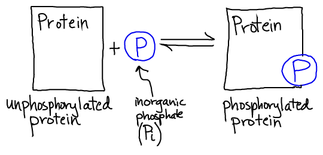
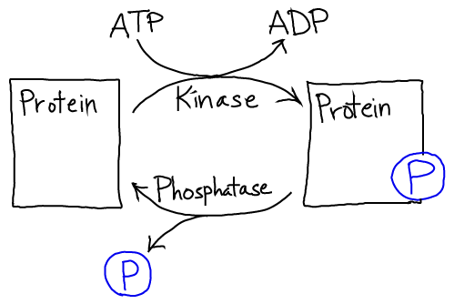
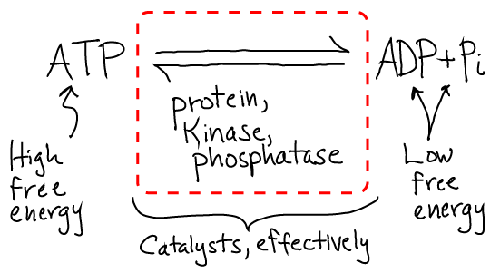

Our interest is not in the details of phosphorylation chemistry, but rather in the role of free energy in controling the directionality of signaling. Most generally, how is reversibility in signaling (e.g., phosphorylation) controlled? After all, every molecular process is reversible, but the cell requires its processes to be sequenced correctly. Why doesn't the enzyme, called a kinase, which places phosphate groups on proteins also catalyze the reverse reaction? And a related question: how can a single enzyme control which side of the phosphorylation reaction is favored?
The answers are very interesting. In a cell, the process of phosphorylation is driven by the free energy stored in ATP in its role as an activated carrier. That is, the same source of free energy that can drive "uphill" chemical synthesis and even locomtion via molecular motors is used to "power" signaling in the sense of ensuring that processes happen in the right order. This is much easier to see in the more accurate cartoon below.

The specific strategy evolved by cells involves two separate reactions which both are free energetically favorable. The kinase catalyzes hydrolysis and attaches the phosphate group, while the kinase catalyzes cleavage of the phosphate group from the protein in a separate reaction. The reactions don't occur in reverse (typically) because the products and reactants are far out of equilibrium, as is always the case when free energy is stored. The cell regulates the duration of the signal - how long the phosphate stays on the protein - by controling the whether or not the phosphatase is present and active. Note that the cell has many types of kinases and phosphatases, each of which is specific to (de)phosphorylating one or a small set of proteins. The activity of these key enzymes in turn may be regulated by other kinase/phosphatase pairs!
From a bottom-line chemistry perspective, the net reaction that occurs is the usual hydrolysis of ATP to ADP and Pi. However, the full reaction is catalyzed by a set of proteins instead of just a single enzyme.
